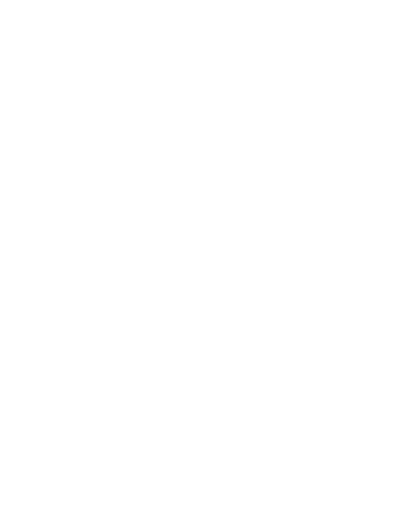
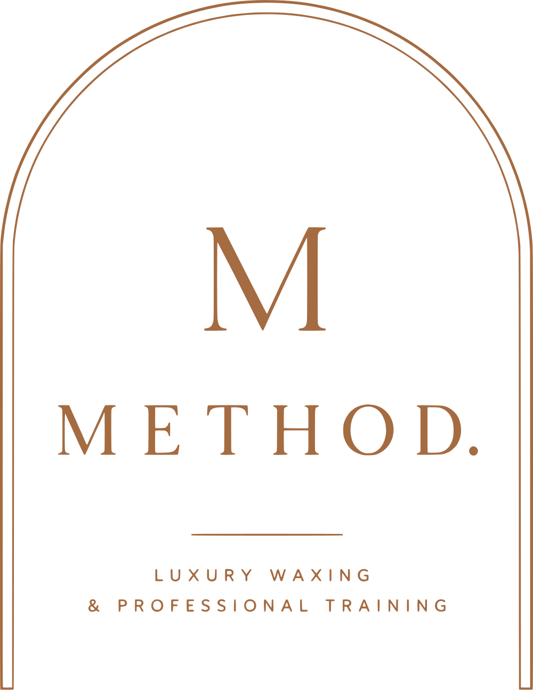
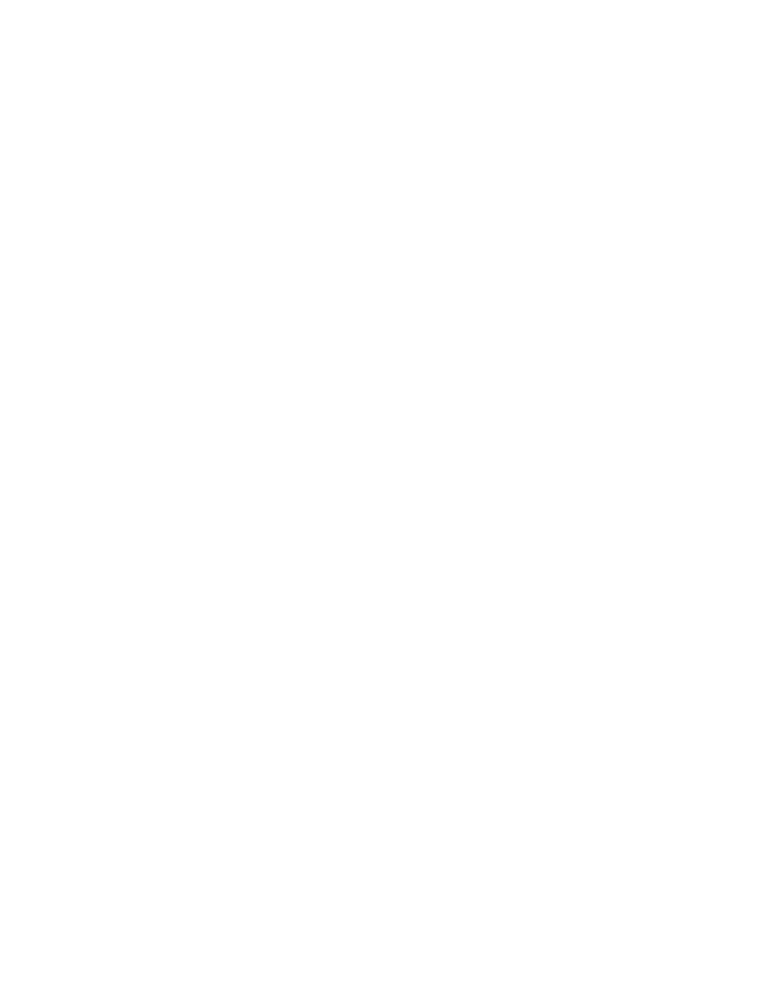

Same brand, four shapes. Pick the one that fits the space you are filling, rather than squeezing the primary logo into a place it was never meant to go.
The arch is built from hairlines, and hairlines disappear when they shrink. Below roughly 40 pixels, stop using the arch and let the M carry the brand on its own.
How each one holds up as it shrinks. The arch softens and fades. The M stays itself all the way down.
Keep a margin around the logo at least as tall as the M in the wordmark. Nothing crosses that line: no text, no photo edge, no other logo.
The measure is the M. Take the height of the M in the METHOD wordmark and use it as the minimum margin on all four sides. It scales with the logo, so it works at any size.
Minimum sizes. Smaller than this and the hairlines break up in print or blur on screen.
| Mark | Screen | |
|---|---|---|
| Primary | 1 in wide | 110 px |
| Horizontal | 1.5 in wide | 170 px |
| Wordmark | 0.9 in wide | 100 px |
| Icon, the M | 0.2 in wide | 16 px |
Black is the default. White is for dark backgrounds. Emerald and copper are there for the moments a single brand colour is called for. Nothing else.


Every one of these has happened to a good logo. The files you have been given already do the right thing, so the rule is simply to use them as they are.
Do not stretch it. Scale proportionally, always.
Do not tilt it. The arch stands upright.
Do not recolour it. Four colourways, no others.
Do not put black on dark. Use the white files.
Do not add effects. No shadows, glows, or outlines.
Do not lose contrast. Keep it clearly readable.
SVG, PDF and EPS are vector: they scale to any size, from a business card to a window decal, with no loss of quality. PNG and JPG are fixed size and made for screens.
| I need to | Use |
|---|---|
| Put the logo on the website | Horizontal or primary, the .svg |
| Send it to a printer, sign maker or embroiderer | 06-print-vector, the .eps |
| Post on Instagram or Facebook | Primary, the on-cream.png |
| Set a profile picture | social-avatar-cream-1000.png |
| Place it on emerald or a dark photo | Any file ending -white |
| Add the browser tab icon | favicon.ico |
| Share the website in a text or on Facebook | og-share-image-1200x630.png |
What is in the folder.
01-primary-logo | The full lockup, four colourways |
02-horizontal-logo | Wide version for headers and signatures |
03-stacked-no-arch | Lockup without the arch |
04-wordmark | METHOD. alone, and with the tagline |
05-icon-and-submark | The M, and the M in the arch |
06-print-vector | PDF and EPS of every mark |
07-website-and-social | Favicon, app icons, avatars, share image |
08-source | The original artwork, untouched |

1410 Pine Ridge Road, Suite 22
Naples, Florida 34108
(239) 529-5441 · Info@MethodWaxPro.Com